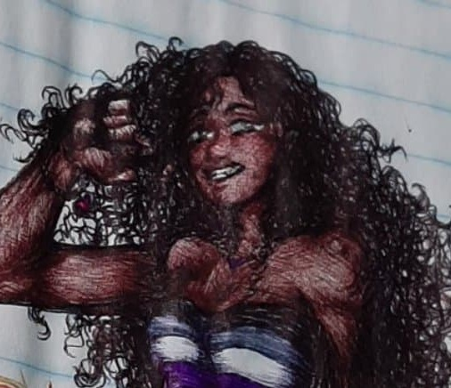

Home
Explore
Notifications
Messages
Profile
More

Yara Paula
@yarapaula
Trabalha na Policlínica de Quixadá - Estudante @ Universidade Federal do Ceará
Quixadá Surgiu em Abril de 2022
Tzeets
Tzeets & replies
Media
Links
Yara Paula @yarapaula
Fev 29, 2020
Qual o significado da morte quando se pode viver até o fim do mundo?
Reply
Retzeet
Like
Share